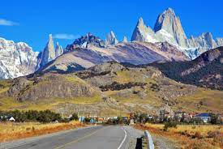

Trabalho de Geografia - Relevo da América Latina
Além dos Andes, existem outras cadeias de montanhas menores em toda a América Latina. Por exemplo, na América Central, há a Serra Madre no México e as Montanhas Talamancas na Costa Rica e no Panamá.
[ ! ] A Cordilheira dos Andes é uma grande cadeia montanhosa, que está localizada na América do Sul. É considerada a maior do mundo em comprimento com aproximadamente 8 mil km de extensão e uma largura que varia de 200 a 700 km.
_____